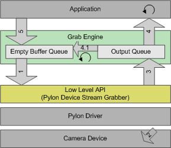
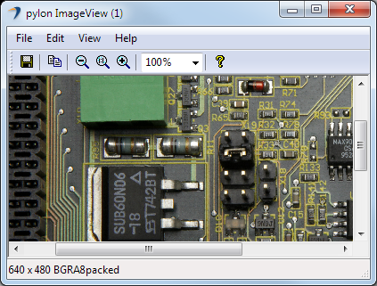

Programmer's Guide#
Creating a Visual Studio Project#
Before you start, make sure Visual Studio 2010 or later with C# or Visual Basic development support is installed. To use Basler pylon, create a new project for any .NET language. The project needs to target .NET Framework 4.0 or a later version. After that, you must add an assembly reference to the Basler.Pylon assembly. To do so, use the standard Visual Studio dialog for the chosen .NET language.
.NET Language Features You Should Know#
To avoid difficulties using the pylon .NET API, you should know the .NET language features described below.
System.IDisposable Interface#
Because most pylon objects allocate unmanaged system resources, it is important to know how to deal with objects that need to be disposed. The pylon objects are not supposed to be cleaned up automatically by the garbage collector. Therefore, pylon objects implement the System.IDisposable interface. An instance of an object implementing IDisposable needs to be disposed properly by calling Dispose() or by using the "using" statement. Alternatively, you can use a "try-finally" statement. In this case, the Dispose() call must be located in the "finally" block.
C#
// Create a camera object that selects the first camera device found.
// More constructors are available for selecting a specific camera device.
using (Camera camera = new Camera())
{
// Open the connection to the camera device.
camera.Open();
// Close the connection to the camera device.
camera.Close();
}
VB
' Create a camera object that selects the first camera device found.
' More constructors are available for selecting a specific camera device.
Using camera As New Camera()
' Open the connection to the camera device.
camera.Open()
' Close the connection to the camera device.
camera.Close()
End Using
The IDisposable interface is also implemented by grab results to control their corresponding buffer. pylon uses a pool of buffers with a fixed amount of buffers (default: 10) to grab images. This is required because certain preparations, e.g., lock the buffer's memory pages, must be made by the driver to be able to grab images into a buffer. Thus, using a pool of buffers is much more efficient than allocating a new buffer for every grabbed image. By calling Dispose(), you signal that the buffer can be reused for grabbing another image. This can't be handled implicitly by the garbage collector because it can't be predicted when garbage collection runs are performed.
C#
// Start grabbing.
camera.StreamGrabber.Start();
// Grab a number of images.
for (int i = 0; i < 10; ++i)
{
// Wait for an image and then retrieve it. A timeout of 5000 ms is used.
IGrabResult grabResult = camera.StreamGrabber.RetrieveResult(5000, TimeoutHandling.ThrowException);
using (grabResult)
{
// Image grabbed successfully?
if (grabResult.GrabSucceeded)
{
// Access the image data.
Console.WriteLine( "SizeX: {0}", grabResult.Width );
Console.WriteLine( "SizeY: {0}", grabResult.Height );
byte[] buffer = grabResult.PixelData as byte[];
Console.WriteLine( "Gray value of first pixel: {0}", buffer[0] );
Console.WriteLine( "" );
}
else
{
Console.WriteLine( "Error: {0} {1}", grabResult.ErrorCode, grabResult.ErrorDescription );
}
}
}
// Stop grabbing.
camera.StreamGrabber.Stop();
VB
' Start grabbing.
camera.StreamGrabber.Start()
' Grab a number of images.
Dim i As Integer = 0
For i = 1 To 10
' Wait for an image and then retrieve it. A timeout of 5000 ms is used.
Dim grabResult As IGrabResult = camera.StreamGrabber.RetrieveResult(5000, TimeoutHandling.ThrowException)
Using grabResult
' Image grabbed successfully?
If grabResult.GrabSucceeded Then
' Access the image data.
Console.WriteLine("SizeX: {0}", grabResult.Width)
Console.WriteLine("SizeY: {0}", grabResult.Height)
Dim buffer As Byte() = TryCast(grabResult.PixelData, Byte())
Console.WriteLine("Gray value of first pixel: {0}", buffer(0))
Console.WriteLine("")
Else
Console.WriteLine("Error: {0} {1}", grabResult.ErrorCode, grabResult.ErrorDescription)
End If
End Using
Next
' Stop grabbing.
camera.StreamGrabber.Stop()
Events#
pylon objects use the .NET event language feature to notify when something interesting happens, e.g., CameraOpened, ImageGrabbed or ParameterChanged. You need to know how to subscribe, consume, and unsubscribe these events. However, you can use basic parameterization and grabbing without knowing events.
 Caution Caution |
|---|
| Explicitly take care of exceptions raised in an event handler. Otherwise, a raised exception can cause unwanted effects like stopping an image grab. See the documentation of the specific event source, e.g., CameraOpened, on how raised exceptions are handled by the event source. |
Camera Class#
The API provides a single Camera class for all camera device types. An instance of the Camera class represents a single physical camera device. Overloaded constructors are available to select a specific camera device, e.g., a camera with a known IP Address or Device User ID. If required, you can use the CameraFinder to get information about all connected camera devices.
Before you can access camera device parameters or grab images, you must initialize the drivers involved and establish a connection to the physical camera device. To do this, call Open(). To close the connection to the camera device, use Close().
An instance of the Camera class allocates unmanaged system resources. Therefore, the class implements the IDisposable interface. The instance needs to be disposed properly by calling Dispose() or by using the "using" statement.
C#
// Create a camera object that selects the first camera device found.
// More constructors are available for selecting a specific camera device.
using (Camera camera = new Camera())
{
// Open the connection to the camera device.
camera.Open();
// Close the connection to the camera device.
camera.Close();
}
VB
' Create a camera object that selects the first camera device found.
' More constructors are available for selecting a specific camera device.
Using camera As New Camera()
' Open the connection to the camera device.
camera.Open()
' Close the connection to the camera device.
camera.Close()
End Using
Interface Class#
The API provides a single Interface class for a variety of interfaces. An instance of the Interface class can represent a frame grabber board, a network card, etc. Currently, this object type is mainly used for the pylon GenTL Consumer transport layer, e.g., for CoaXPress. All other pylon transport layers currently return one default interface. A constructor is available to select a specific interface by using an IInterfaceInfo instance. The InterfaceFinder class can be used to get information (a list of IInterfaceInfo) about all available interfaces (with the option to filter by device type).
The Interface class can be used to get information about all cameras attached to this particular interface. You can do that by calling EnumerateCameras().
Before you can access interface parameters, you must open the interface instance. To do this, call Open(). To close the interface, use Close(). The 'open' status of an interface instance won't change even if the state of the attached cameras changes, e.g., opened or closed.
An instance of the Interface class allocates unmanaged system resources. Therefore, the class implements the IDisposable interface. The instance needs to be disposed properly by calling Dispose() or by using the "using" statement.
Parameter Access#
For camera configuration and for accessing other parameters, the pylon API uses the technologies defined by the GenICam standard. The standard also defines a format for camera description files. These files describe the configuration interface of GenICam compliant cameras. The description files are written in XML and describe camera registers, their interdependencies, and all other information needed to access high-level features. This includes features such as Gain, Exposure Time, or Pixel Format. The features are accessed by means of low level register read and write operations.
Parameter Collections#
To access all parameters, the Camera class and other pylon objects provide a single IParameterCollection. A parameter collection represents a set of parameters that are identified by a path, a name, and a type.
The pylon API provides predefined lists of parameter names. These parameter lists contain a set of parameter names, similar to enumerations of a programming language. All parameter list class identifiers start with the prefix "PL". This makes it easier to find the required parameter list in the API documentation or when using IntelliSense in the Visual Studio editor.
The parameter list PLCamera represents a union of all available parameters of all camera device types. To access parameters of an instance of the Camera class, you can use the parameter list PLCameraInstance.
The following code example can be found in the Parameterize Camera code sample:
C#
/*************************************************************************
* Accessing camera parameters *
*************************************************************************/
// Before accessing camera device parameters, the camera must be opened.
camera.Open();
// DeviceVendorName, DeviceModelName, and DeviceFirmwareVersion are string parameters.
Console.WriteLine( "Camera Device Information" );
Console.WriteLine( "=========================" );
Console.WriteLine( "Vendor : {0}", camera.Parameters[PLCamera.DeviceVendorName].GetValue() );
Console.WriteLine( "Model : {0}", camera.Parameters[PLCamera.DeviceModelName].GetValue() );
Console.WriteLine( "Firmware version : {0}", camera.Parameters[PLCamera.DeviceFirmwareVersion].GetValue() );
Console.WriteLine( "" );
Console.WriteLine( "Camera Device Settings" );
Console.WriteLine( "======================" );
// Setting the AOI. OffsetX, OffsetY, Width, and Height are integer parameters.
// On some cameras, the offsets are read-only. If they are writable, set the offsets to min.
camera.Parameters[PLCamera.OffsetX].TrySetToMinimum();
camera.Parameters[PLCamera.OffsetY].TrySetToMinimum();
// Some parameters have restrictions. You can use GetIncrement/GetMinimum/GetMaximum to make sure you set a valid value.
// Here, we let pylon correct the value if needed.
camera.Parameters[PLCamera.Width].SetValue( 202, IntegerValueCorrection.Nearest );
camera.Parameters[PLCamera.Height].SetValue( 101, IntegerValueCorrection.Nearest );
Console.WriteLine( "OffsetX : {0}", camera.Parameters[PLCamera.OffsetX].GetValue() );
Console.WriteLine( "OffsetY : {0}", camera.Parameters[PLCamera.OffsetY].GetValue() );
Console.WriteLine( "Width : {0}", camera.Parameters[PLCamera.Width].GetValue() );
Console.WriteLine( "Height : {0}", camera.Parameters[PLCamera.Height].GetValue() );
// Set an enum parameter.
string oldPixelFormat = camera.Parameters[PLCamera.PixelFormat].GetValue(); // Remember the current pixel format.
Console.WriteLine( "Old PixelFormat : {0} ({1})", camera.Parameters[PLCamera.PixelFormat].GetValue(), oldPixelFormat );
// Set pixel format to Mono8 if available.
if (camera.Parameters[PLCamera.PixelFormat].TrySetValue( PLCamera.PixelFormat.Mono8 ))
{
Console.WriteLine( "New PixelFormat : {0} ({1})", camera.Parameters[PLCamera.PixelFormat].GetValue(), oldPixelFormat );
}
// Some camera models may have auto functions enabled. To set the gain value to a specific value,
// the Gain Auto function must be disabled first (if gain auto is available).
camera.Parameters[PLCamera.GainAuto].TrySetValue( PLCamera.GainAuto.Off ); // Set GainAuto to Off if it is writable.
VB
'************************************************************************
'* Accessing camera parameters *
'************************************************************************
' Before accessing camera device parameters the camera must be opened.
camera.Open()
' DeviceVendorName, DeviceModelName, and DeviceFirmwareVersion are string parameters.
Console.WriteLine("Camera Device Information")
Console.WriteLine("=========================")
Console.WriteLine("Vendor : {0}", camera.Parameters(PLCamera.DeviceVendorName).GetValue())
Console.WriteLine("Model : {0}", camera.Parameters(PLCamera.DeviceModelName).GetValue())
Console.WriteLine("Firmware version : {0}", camera.Parameters(PLCamera.DeviceFirmwareVersion).GetValue())
Console.WriteLine("")
Console.WriteLine("Camera Device Settings")
Console.WriteLine("======================")
' Setting the AOI. OffsetX, OffsetY, Width, and Height are integer parameters.
' On some cameras, the offsets are read-only. If they are writable, set the offsets to min.
camera.Parameters(PLCamera.OffsetX).TrySetToMinimum()
camera.Parameters(PLCamera.OffsetY).TrySetToMinimum()
' Some parameters have restrictions. You can use GetIncrement/GetMinimum/GetMaximum to make sure you set a valid value.
' Here, we let pylon correct the value if needed.
camera.Parameters(PLCamera.Width).SetValue(202, IntegerValueCorrection.Nearest)
camera.Parameters(PLCamera.Height).SetValue(101, IntegerValueCorrection.Nearest)
Console.WriteLine("OffsetX : {0}", camera.Parameters(PLCamera.OffsetX).GetValue())
Console.WriteLine("OffsetY : {0}", camera.Parameters(PLCamera.OffsetY).GetValue())
Console.WriteLine("Width : {0}", camera.Parameters(PLCamera.Width).GetValue())
Console.WriteLine("Height : {0}", camera.Parameters(PLCamera.Height).GetValue())
' Set an enum parameter.
Dim oldPixelFormat As String = camera.Parameters(PLCamera.PixelFormat).GetValue()
' Remember the current pixel format.
Console.WriteLine("Old PixelFormat : {0} ({1})", camera.Parameters(PLCamera.PixelFormat).GetValue(), oldPixelFormat)
' Set pixel format to Mono8 if available.
If camera.Parameters(PLCamera.PixelFormat).TrySetValue(PLCamera.PixelFormat.Mono8) Then
Console.WriteLine("New PixelFormat : {0} ({1})", camera.Parameters(PLCamera.PixelFormat).GetValue(), oldPixelFormat)
End If
' Some camera models may have auto functions enabled. To set the gain value to a specific value,
' the Gain Auto function must be disabled first (if gain auto is available).
camera.Parameters(PLCamera.GainAuto).TrySetValue(PLCamera.GainAuto.Off) ' Set GainAuto to Off if it is writable.
Parameter Types#
Integer Parameters#
The IIntegerParameter interface provides access to integer parameters. An integer parameter represents a feature that can be set by an integer number, such as the image width or height in pixels. Besides the current value of an integer parameter, you can read the minimum and a maximum value, defining the range of allowed values for the parameter. Also, you can read the increment value of the parameter. The current, minimum, maximum, and the increment value can all be accessed as 64-bit values.
Floating-Point Parameters#
Floating-point parameters are represented by IFloatParameter objects. They can be set to a floating-point value. The floating-point parameter is similar to the integer parameter, with the following exceptions:
- All values are of the "double" type (double precision floating-point numbers as defined by the IEEE 754 standard).
- The increment value is optional, and values are automatically corrected to a valid increment.
Boolean Parameters#
A Boolean parameter represents a binary-valued feature that can be enabled or disabled. It is represented by the IBooleanParameter interface. For example, a Boolean parameter can be a "switch" to enable or disable a particular feature, such as a camera's external trigger input.
Enumeration Parameters#
The IEnumParameter interface provides access to camera parameters that can take any value from a predefined set. Examples of enumeration parameters are the PixelFormat and the TestImageSelector parameters.
Command Parameters#
Command parameters (ICommandParameter) trigger an action or an operation inside of the camera, e.g., issue a software trigger. The action is executed by calling Execute(). You can use IsExecuting() to determine whether the execution of the action has finished.
String Parameters#
The IStringParameter interface provides access to string parameters.
Accessing Parameters Without Using a Parameter List#
Accessing parameters without using a parameter list can be necessary in rare cases, e.g., if you want to set newly added camera parameters that are not included in a parameter list yet. Apart from that, Basler recommends using parameter lists to avoid using incorrect parameter types and to avoid spelling errors.
C#
// Set pixel format to Mono8 if available.
if (camera.Parameters[PLCamera.PixelFormat].TrySetValue( PLCamera.PixelFormat.Mono8 ))
{
Console.WriteLine( "New PixelFormat : {0} ({1})", camera.Parameters[PLCamera.PixelFormat].GetValue(), oldPixelFormat );
}
// When accessing parameters, the name and the type must usually be known beforehand.
// The following syntax can be used to access any camera device parameter.
// Adjust the parameter name ("BrandNewFeature") and the parameter type (IntegerName, EnumName, FloatName, etc.)
// according to the parameter that you want to access.
camera.Parameters[(IntegerName)"BrandNewFeature"].TrySetToMaximum(); // TrySetToMaximum is called for demonstration purposes only.
// This is another alternative to access a parameter without using a parameter list
// shown for completeness only
IIntegerParameter brandNewFeature = camera.Parameters["BrandNewFeature"] as IIntegerParameter;
// brandNewFeature will be null if it is not present because it cannot be casted to IIntegerParameter
if (brandNewFeature != null)
{
brandNewFeature.TrySetToMaximum();
}
// Enumeration values are plain strings.
// Similar to the example above, the pixel format is set to Mono8, this time without using a parameter list.
if (camera.Parameters[(EnumName)"PixelFormat"].TrySetValue( "Mono8" ))
{
Console.WriteLine( "New PixelFormat : {0}", camera.Parameters[(EnumName)"PixelFormat"].GetValue() );
}
VB
' Set pixel format to Mono8 if available.
If camera.Parameters(PLCamera.PixelFormat).TrySetValue(PLCamera.PixelFormat.Mono8) Then
Console.WriteLine("New PixelFormat : {0} ({1})", camera.Parameters(PLCamera.PixelFormat).GetValue(), oldPixelFormat)
End If
' When accessing parameters, the name and the type must usually be known beforehand.
' The following syntax can be used to access any camera device parameter.
' Adjust the parameter name ("BrandNewFeature") and the parameter type (IntegerName, EnumName, FloatName, etc.)
' according to the parameter that you want to access.
camera.Parameters(CType("BrandNewFeature", IntegerName)).TrySetToMaximum()
' This is another alternative to access a parameter without using a parameter list
' shown for completeness only
Dim brandNewFeature As IIntegerParameter = TryCast(camera.Parameters("BrandNewFeature"), IIntegerParameter)
' brandNewFeature will be Nothing if it is not present because it cannot be casted to IIntegerParameter
If brandNewFeature IsNot Nothing Then
brandNewFeature.TrySetToMaximum()
End If
' TrySetToMaximum is called for demonstration purposes only.
' Enumeration values are plain strings.
' Similar to the example above, the pixel format is set to Mono8, this time without using a parameter list.
If camera.Parameters(CType("PixelFormat", EnumName)).TrySetValue("Mono8") Then
Console.WriteLine("New PixelFormat : {0}", camera.Parameters(CType("PixelFormat", EnumName)).GetValue())
End If
How Parameter Lists Work#
Parameter lists, e.g., PLCamera, are classes that are automatically generated at compile time of pylon. The parameter lists contain a property for every camera parameter, e.g., Width. A property returns one of the name types, e.g., IntegerName. A name type contains the full name of the parameter as plain string, e.g., "@CameraDevice/Width". This way, the compiler can determine the type of parameter returned by selecting one of the overloaded indexers of IParameterCollection (shown below) according to the passed name type. The full name string is used to select and return the parameter internally.
When looking up parameters of the main path, the path can be omitted. The main path for a Camera is CameraDevice, so the string "Width" selects the same parameter as the string "@CameraDevice/Width".
C#
// The overloaded indexer of IParameterCollection.
IParameter this[string name] { get; }
IFloatParameter this[FloatName name] { get; }
IBooleanParameter this[BooleanName name] { get; }
ICommandParameter this[CommandName name] { get; }
IStringParameter this[StringName name] { get; }
IEnumParameter this[EnumName name] { get; }
IIntegerParameter this[IntegerName name] { get; }
Enumeration parameters extend this further. The properties of enumeration parameters, e.g., PixelFormat, are special classes generated for each enumeration type provided by a camera, e.g., PLCamera.PixelFormatEnum. These special classes contain properties that represent the possible values of an enumeration parameter, e.g., Mono8. A value of an enumeration parameter is always just a plain string, e.g., "Mono8". All special enum class can be casted to EnumName implicitly by the compiler.
Predefined Camera Parameter Configurations#
The Configuration class provides a set of predefined camera parameter configurations. The methods of this class can be added to the CameraOpened event. When the camera is opened, the configuration method is automatically called and the camera configuration is changed accordingly. For example, the AcquireContinuous method enables free running continuous acquisition (see example code below).
Also, you can create your own configuration methods and add them to the CameraOpened event. That way, the camera is always parameterized correctly when opened. For more information, see the Parameterize Camera Configurations code sample.
C#
// Set the acquisition mode to free running continuous acquisition when the camera is opened.
camera.CameraOpened += Configuration.AcquireContinuous;
// Open the connection to the camera device.
camera.Open();
VB
' Set the acquisition mode to free running continuous acquisition when the camera is opened.
AddHandler camera.CameraOpened, AddressOf Configuration.AcquireContinuous
' Open the connection to the camera device.
camera.Open()
Handling Differences Between Camera Models#
Features like Gain are named according to the GenICam Standard Feature Naming Convention (SFNC). The SFNC defines a common set of features, their behavior, and the related parameter names. Cameras compliant with the USB3 Vision and CoaXPress standards are based on the SFNC version 2.0 or later. Basler GigE cameras, on the other hand, are based on previous SFNC versions. Accordingly, the behavior of these cameras and some parameters names will be different. The following sections show how to handle this.
Empty Parameters#
Some parameter names may not be available on certain camera models. For example, GammaEnable is not available on USB camera devices. If a requested parameter does not exist, pylon returns an empty parameter object. Therefore, an additional existence check is not necessary. An empty parameter is never readable or writable.
C#
Console.WriteLine( "GammaEnable writable : {0}", camera.Parameters[PLCamera.GammaEnable].IsWritable );
Console.WriteLine( "GammaEnable readable : {0}", camera.Parameters[PLCamera.GammaEnable].IsReadable );
Console.WriteLine( "GammaEnable empty : {0}", camera.Parameters[PLCamera.GammaEnable].IsEmpty );
VB
Console.WriteLine("GammaEnable writable : {0}", camera.Parameters(PLCamera.GammaEnable).IsWritable)
Console.WriteLine("GammaEnable readable : {0}", camera.Parameters(PLCamera.GammaEnable).IsReadable)
Console.WriteLine("GammaEnable empty : {0}", camera.Parameters(PLCamera.GammaEnable).IsEmpty)
Try Methods#
The pylon parameter interfaces provide additional extension methods that are prefixed with "Try", e.g., TrySetValue(IEnumParameter, String). For these methods, the action is executed if the parameter is writable. Sometimes, the value must also be settable.
C#
// Some camera models may have auto functions enabled. To set the gain value to a specific value,
// the Gain Auto function must be disabled first (if gain auto is available).
camera.Parameters[PLCamera.GainAuto].TrySetValue( PLCamera.GainAuto.Off ); // Set GainAuto to Off if it is writable.
VB
' Some camera models may have auto functions enabled. To set the gain value to a specific value,
' the Gain Auto function must be disabled first (if gain auto is available).
camera.Parameters(PLCamera.GainAuto).TrySetValue(PLCamera.GainAuto.Off) ' Set GainAuto to Off if it is writable.
| Caution |
|---|
| For the exact semantics of a "Try" method, check its documentation. |
OrDefault Methods#
Methods that are suffixed with "OrDefault", e.g., GetValueOrDefault(), can be used to read a parameter value if it is readable or otherwise return a default value.
C#
// Toggle CenterX to change the availability of OffsetX.
// If CenterX is readable, get the value. Otherwise, return false.
bool centerXValue = camera.Parameters[PLCamera.CenterX].GetValueOrDefault(false);
VB
' Toggle CenterX to change the availability of OffsetX.
' If CenterX is readable, get the value. Otherwise, return false.
Dim centerXValue As Boolean = camera.Parameters(PLCamera.CenterX).GetValueOrDefault(False)
Checking the SFNC Version#
If your code has to work with multiple camera device types that are compatible with different SFNC versions, you can use GetSfncVersion() to handle differences in parameter name and behavior.
C#
if (camera.GetSfncVersion() < sfnc2_0_0) // Handling for older cameras
{
// In previous SFNC versions, GainRaw is an integer parameter.
camera.Parameters[PLCamera.GainRaw].SetValuePercentOfRange( 50 );
// GammaEnable is a boolean parameter.
camera.Parameters[PLCamera.GammaEnable].TrySetValue( true );
}
else // Handling for newer cameras (using SFNC 2.0, e.g. USB3 Vision cameras)
{
// In SFNC 2.0, Gain is a float parameter.
camera.Parameters[PLUsbCamera.Gain].SetValuePercentOfRange( 50 );
// For USB cameras, Gamma is always enabled.
}
VB
If camera.GetSfncVersion() < Sfnc2_0_0 Then
' In previous SFNC versions, GainRaw is an integer parameter.
camera.Parameters(PLCamera.GainRaw).SetValuePercentOfRange(50)
' GammaEnable is a boolean parameter.
camera.Parameters(PLCamera.GammaEnable).TrySetValue(True)
Else
' For SFNC 2.0 cameras, e.g. USB3 Vision cameras
' In SFNC 2.0, Gain is a float parameter.
' For USB cameras, Gamma is always enabled.
camera.Parameters(PLUsbCamera.Gain).SetValuePercentOfRange(50)
End If
| Caution |
|---|
| To read the SFNC version, the camera must be open. |
Parameter Changed Events#
Parameters provide the ParameterChanged and ParameterValueChanged events. These events are raised, e.g., if a parameter is changed or if the state of the camera object changes. The following code can be found in the Pylon Live View code sample.
C#
// The parameter state changed. Update the control.
private void ParameterChanged( Object sender, EventArgs e )
{
if (InvokeRequired)
{
// If called from a different thread, we must use the Invoke method to marshal the call to the proper thread.
BeginInvoke( new EventHandler<EventArgs>( ParameterChanged ), sender, e );
return;
}
try
{
UpdateValues();
}
catch
{
// If errors occurred disable the control.
Reset();
}
}
| Caution |
|---|
| The access permissions of parameters may change, i.e., a parameter may become not readable or not writable. An parameter changed event handler must handle this. |
| Caution |
|---|
| Explicitly take care of exceptions raised in an event handler. |
Where to Find More Information on Parameterizing the Camera#
The sample Parameterize Camera provides additional information on how to access parameters.
The following sources provide additional information about parameters:
- The Basler Product Documentation
- The parameter lists, e.g., PLCamera
- The pylon Viewer
- The pylon code samples
- Camera user's manuals that are not included in the Basler Product Documentation. They are installed with pylon.
Grabbing Images#
This section explains how to grab images using the Camera class. Before grabbing images, the camera parameters must be set up using one or more of the following approaches:
- Configure the camera by using the CameraOpened event to call configuration methods. This has the advantage that the camera is always parameterized correctly when opened.
- Configure the camera by using code in the program flow after Open() is called.
- Preconfigure the camera, e.g., by using the pylon Viewer. The pre-configuration is stored in a so-called "user set" in the camera. If a user set is selected as the "startup set", the set becomes active when the camera is powered on.
Acquire, Transfer, and Grab Images#
The pylon API distinguishes between image acquisition, image data transfer, and image grabbing.
- Image acquisition is the process of acquiring images inside the camera. When a camera starts image acquisition, the sensor is exposed. When exposure is complete, the image data is read out from the sensor.
- Image data transfer is the process of transferring the acquired image data from the camera's memory to the PC. This is done using an interface such as USB3 or Gigabit Ethernet.
- "Grabbing" images is the process of writing the image data into the PC's main memory.
Grab Result#
The data of a grabbed image is held by an IGrabResult object. The grab result controls the reuse and the lifetime of the associated pixel data buffer.
The IDisposable interface is implemented by grab results to control their corresponding buffer. pylon uses a pool of buffers with a fixed amount of buffers (default: 10) to grab images. This is required because certain preparations, e.g., lock the buffer's memory pages, must be made by the driver to be able to grab images into a buffer. Thus, using a pool of buffers is much more efficient than allocating a new buffer for every grabbed image. By calling Dispose(), you signal that the buffer can be reused for grabbing another image. This can't be handled implicitly by the garbage collector because it can't be predicted when garbage collection runs are performed.
To distribute the grab result data to different software modules in a program, you can clone the grab result using the Clone() method. Cloning a buffer is implemented internally as a reference counter. Every call to Clone() increases the reference counter by one. Every call to Dispose() decreases the reference counter by one. If the reference counter drops to zero, the grab result's pixel data buffer is reused for grabbing. Cloning can be used to distribute a grab result to multiple modules, e.g., image display and image processing. Each module can individually free a grab result when it is no longer needed by calling Dispose(). This way, no "bookkeeping" is required to trigger the reuse of a grab result's buffer correctly.
The grab result and the associated pixel data buffer can have a longer lifetime than the camera object that was used for grabbing.
| Caution |
|---|
| If grab results are never disposed, image grabbing will stop with a buffer underrun. |
Buffer Handling#
When Start() is called, new buffers are automatically allocated for each grab session. This is done by the StreamGrabber of the camera. The pixel data buffer of a grabbed image is held by the grab result. If the grab result is disposed while grabbing is in progress, the pixel data buffer is reused. If the grab result is disposed when image grabbing has stopped, the pixel data buffer is "freed".
You can set the maximum number of image data buffers by using the MaxNumBuffer parameter. The default number of image data buffers used for grabbing is 10. The buffer size required for grabbing is determined automatically. Also, the number of allocated buffers is reduced automatically when you are grabbing a defined number of images smaller than the value of MaxNumBuffer, e.g., 5.
A buffer factory can be attached to the StreamGrabber of the camera in order to use user-provided buffers. Using a buffer factory is optional and intended for advanced use cases only. The buffer factory class must be derived from IBufferFactory. An instance of a buffer factory object can be attached to an instance of the Stream Grabber class by using the BufferFactory property. Buffers are allocated when Start() is called. A buffer factory must not be disposed while it is attached to the Stream Grabber object and it must not be disposed until the last buffer is freed. To free all buffers, the grab needs to be stopped and all grab results must be released or destroyed. The Using Buffer Factory code sample illustrates the use of a buffer factory.
Grab Engine#
The grab engine of the camera consists of an empty buffer queue, an output queue, and a grab thread. The grab engine uses a low level stream grabber to grab images. The empty buffer queue and the output queue can hold the number of buffers defined by the MaxNumBuffer parameter. The maximum number of buffers passed to the low level stream grabber at any time is defined by the MaxNumQueuedBuffer parameter.
All queues operate in FIFO mode (first in, first out). The grab engine thread ensures that the low level stream grabber does not run out of buffers as long as buffers are available in the empty buffer queue.
Grab Strategies#
The StreamGrabber supports different grab strategies. The default strategy is "One By One". For more information about available grab strategies, see the GrabStrategy documentation and the Grab Strategies code sample.
The Buffer Flow

- The grab engine unqueues buffers from the empty buffer queue and queues the empty buffers at the low level stream grabber (1).
- The camera device is triggered, and a new image is acquired by the camera device (2). The image is transferred to the PC and then grabbed into an empty buffer.
- The grab engine thread is notified that a filled buffer is available. The buffer is retrieved by the grab engine thread (3) and put into the output queue.
- The idle application thread inside RetrieveResult(Int32, TimeoutHandling) is notified. The thread stops waiting for a grab result and retrieves the filled buffer (4) as part of a grab result data object.
- If the LatestImages grab strategy is used, the user can adjust the size of the output queue. If a new buffer has been grabbed and the output queue is full, the first buffer waiting in the output queue is automatically returned to the empty buffer queue (4.1). The new buffer is then placed into the output queue. This ensures that the application is always provided with the latest grabbed images. Images that are automatically returned to the empty buffer queue are called "skipped" images. When setting the output queue size to MaxNumBuffer, this strategy is equivalent to the One By One grab strategy.
- After the application has processed the image data, the buffer is returned to the empty buffer queue (5). This is done by disposing the grab result. Returned buffers are reused for grabbing.
Grabbing Images in a Loop#
The following example shows a simple grab loop:
C#
// Start grabbing.
camera.StreamGrabber.Start();
// Grab a number of images.
for (int i = 0; i < 10; ++i)
{
// Wait for an image and then retrieve it. A timeout of 5000 ms is used.
IGrabResult grabResult = camera.StreamGrabber.RetrieveResult(5000, TimeoutHandling.ThrowException);
using (grabResult)
{
// Image grabbed successfully?
if (grabResult.GrabSucceeded)
{
// Access the image data.
Console.WriteLine( "SizeX: {0}", grabResult.Width );
Console.WriteLine( "SizeY: {0}", grabResult.Height );
byte[] buffer = grabResult.PixelData as byte[];
Console.WriteLine( "Gray value of first pixel: {0}", buffer[0] );
Console.WriteLine( "" );
}
else
{
Console.WriteLine( "Error: {0} {1}", grabResult.ErrorCode, grabResult.ErrorDescription );
}
}
}
// Stop grabbing.
camera.StreamGrabber.Stop();
VB
' Start grabbing.
camera.StreamGrabber.Start()
' Grab a number of images.
Dim i As Integer = 0
For i = 1 To 10
' Wait for an image and then retrieve it. A timeout of 5000 ms is used.
Dim grabResult As IGrabResult = camera.StreamGrabber.RetrieveResult(5000, TimeoutHandling.ThrowException)
Using grabResult
' Image grabbed successfully?
If grabResult.GrabSucceeded Then
' Access the image data.
Console.WriteLine("SizeX: {0}", grabResult.Width)
Console.WriteLine("SizeY: {0}", grabResult.Height)
Dim buffer As Byte() = TryCast(grabResult.PixelData, Byte())
Console.WriteLine("Gray value of first pixel: {0}", buffer(0))
Console.WriteLine("")
Else
Console.WriteLine("Error: {0} {1}", grabResult.ErrorCode, grabResult.ErrorDescription)
End If
End Using
Next
' Stop grabbing.
camera.StreamGrabber.Stop()
Image grabbing is started by calling Start(). After that, images are grabbed continuously. The grab results are placed into the stream grabber's output queue in the same order in which they were acquired by the camera (grab strategy OneByOne). The RetrieveResult(Int32, TimeoutHandling) method is used to wait for a grab result and to retrieve it from the output queue. Some of the grab result data is displayed on the screen. After a number of images has been grabbed, image grabbing is stopped by calling Stop().
If you are using the grab strategy OneByOne and no grab results are retrieved, image grabbing pauses and the last acquired images are discarded.
You can find the above code snippet in the Grab code sample.
| Caution |
|---|
| If the grab results are never disposed or all grab buffers are in use, the RetrieveResult() call will time out. |
Handling the Image Grabbed Event#
The following example shows a simple ImageGrabbed event handler:
C#
// Example of an image event handler.
static void OnImageGrabbed( Object sender, ImageGrabbedEventArgs e )
{
// The grab result is automatically disposed when the event call back returns.
// The grab result can be cloned using IGrabResult.Clone if you want to keep a copy of it (not shown in this sample).
IGrabResult grabResult = e.GrabResult;
// Image grabbed successfully?
if (grabResult.GrabSucceeded)
{
// Access the image data.
Console.WriteLine( "SizeX: {0}", grabResult.Width );
Console.WriteLine( "SizeY: {0}", grabResult.Height );
byte[] buffer = grabResult.PixelData as byte[];
Console.WriteLine( "Gray value of first pixel: {0}", buffer[0] );
Console.WriteLine( "" );
}
else
{
Console.WriteLine( "Error: {0} {1}", grabResult.ErrorCode, grabResult.ErrorDescription );
}
}
| Caution |
|---|
| The provided grab result is disposed automatically when the event call returns. If you want to use it for further processing, you must clone it. Otherwise, the corresponding buffer is reused for grabbing. |
| Caution |
|---|
| Explicitly take care of exceptions raised in the event handler. A raised exception will propagate through to the caller of RetrieveResult(Int32, TimeoutHandling). If the grab loop thread is provided by the stream grabber (ProvidedByStreamGrabber), image grabbing will automatically be stopped. The code example above omits handling raised exceptions, because it is most likely that no exceptions are raised by writing to the console output. |
Grabbing Images Using the Grab Loop Thread Provided by the Stream Grabber#
The StreamGrabber can optionally provide a grab loop thread. The thread grabs images in a loop by calling RetrieveResult(Int32, TimeoutHandling) repeatedly. When using the provided grab loop thread, an ImageGrabbed event handler is required to process the grab results (shown above).
The following example shows how to grab using the event handler above and the grab loop thread provided by the StreamGrabber:
C#
// Set a handler for processing the images.
camera.StreamGrabber.ImageGrabbed += OnImageGrabbed;
// Start grabbing using the grab loop thread. This is done by setting the grabLoopType parameter
// to GrabLoop.ProvidedByStreamGrabber. The grab results are delivered to the image event handler OnImageGrabbed.
// The default grab strategy (GrabStrategy_OneByOne) is used.
camera.StreamGrabber.Start( GrabStrategy.OneByOne, GrabLoop.ProvidedByStreamGrabber );
// Wait for user input to trigger the camera or exit the loop.
// Software triggering is used to trigger the camera device.
Char key;
do
{
Console.WriteLine( "Press 't' to trigger the camera or 'e' to exit." );
key = Console.ReadKey( true ).KeyChar;
if ((key == 't' || key == 'T'))
{
// Execute the software trigger. Wait up to 1000 ms until the camera is ready for trigger.
if (camera.WaitForFrameTriggerReady( 1000, TimeoutHandling.ThrowException ))
{
camera.ExecuteSoftwareTrigger();
}
}
}
while ((key != 'e') && (key != 'E'));
// Stop grabbing.
camera.StreamGrabber.Stop();
First, the image event handler is registered. In this example, it is used to display a message and process the image. Image grabbing is started using Start(GrabStrategy, GrabLoop) for an unlimited number of images. By setting the second parameter of the Start() method to ProvidedByStreamGrabber, the grab loop thread provided by the StreamGrabber is used. The main thread can now be used to query user keyboard input. Depending on which key the user presses, an image is triggered or the input loop is terminated. If the input loop is terminated, image grabbing is stopped by calling Stop().
You can find the above code snippet in the Grab Using Grab Loop Thread code sample.
Image Handling and Image Display#
The pylon API provides additional classes for image handling support. This includes an image format converter class, an image window class, and a class that supports saving images to disk.
Pixel Data Converter#
The PixelDataConverter allows you to create new images by converting an existing image to a new format. Once the format converter is configured, it can convert images to almost all formats supported by Basler camera devices, e.g., Bitmap.
C#
Bitmap bitmap = new Bitmap(grabResult.Width, grabResult.Height, PixelFormat.Format32bppRgb);
// Lock the bits of the bitmap.
BitmapData bmpData = bitmap.LockBits(new Rectangle(0, 0, bitmap.Width, bitmap.Height), ImageLockMode.ReadWrite, bitmap.PixelFormat);
// Place the pointer to the buffer of the bitmap.
converter.OutputPixelFormat = PixelType.BGRA8packed;
IntPtr ptrBmp = bmpData.Scan0;
converter.Convert( ptrBmp, bmpData.Stride * bitmap.Height, grabResult );
bitmap.UnlockBits( bmpData );
| Caution |
|---|
| .NET Bitmap objects implement the IDisposable interface because they contain unmanaged resources. Therefore, they must be disposed correctly. |
| Caution |
|---|
| PixelDataConverter objects implement the IDisposable interface because they contain unmanaged resources. Therefore, they must be disposed correctly. |
Saving Images#
The ImagePersistence class supports saving images to disk and loading images from disk.
Image Window#
The ImageWindow class allows you to easily display images on the screen using DisplayImage(Int32, IImage). You can use this class to inspect images retrieved from the stream grabber.

C#
// Start grabbing.
camera.StreamGrabber.Start();
// Grab a number of images.
for (int i = 0; i < 10; ++i)
{
// Wait for an image and then retrieve it. A timeout of 5000 ms is used.
IGrabResult grabResult = camera.StreamGrabber.RetrieveResult(5000, TimeoutHandling.ThrowException);
using (grabResult)
{
// Image grabbed successfully?
if (grabResult.GrabSucceeded)
{
// Display the grabbed image.
ImageWindow.DisplayImage( 0, grabResult );
}
else
{
Console.WriteLine( "Error: {0} {1}", grabResult.ErrorCode, grabResult.ErrorDescription );
}
}
}
// Stop grabbing.
camera.StreamGrabber.Stop();
VB
' Start grabbing.
camera.StreamGrabber.Start()
' Grab a number of images.
Dim i As Integer = 0
For i = 1 To 10
' Wait for an image and then retrieve it. A timeout of 5000 ms is used.
Dim grabResult As IGrabResult = camera.StreamGrabber.RetrieveResult(5000, TimeoutHandling.ThrowException)
Using grabResult
' Image grabbed successfully?
If grabResult.GrabSucceeded Then
' Display the grabbed image.
ImageWindow.DisplayImage(0, grabResult)
Else
Console.WriteLine("Error: {0} {1}", grabResult.ErrorCode, grabResult.ErrorDescription)
End If
End Using
Next
' Stop grabbing.
camera.StreamGrabber.Stop()
You can find the above code snippet in the Grab code sample.
Video Writer#
The VideoWriter can be used to create video files in the MP4 format. For more information, see the Creating MPEG4 Video Files code sample.
To use the Video Writer, you must install the pylon Supplementary Package for MPEG-4 which is available on the Basler website.
Alternatively, AviVideoWriter can be used to write videos. It uses the Video for Windows API internally. Because AVI videos have a size limit of 2 GB, Basler recommends using the VideoWriter instead.
Using Advanced Camera Features#
Handling Camera Events#
Basler GigE Vision and USB3 Vision cameras can send event messages. For example, when a sensor exposure has finished, the camera can send an Exposure End event to the PC. Events can be received by subscribing to a ParameterChanged event. For more information, see the Grab Using Camera Events code sample and the Grab Using Exposure End Event code sample.
| Caution |
|---|
| Camera events are processed synchronously to the image stream while waiting for images in the IStreamGrabber.RetrieveResult method. |
| Caution |
|---|
| If the grab loop thread is provided by the stream grabber (ProvidedByStreamGrabber), the ParameterChanged event handler call is made from the internal grab loop thread. |
Accessing Chunk Features#
Basler cameras supporting the Data Chunk feature can generate supplementary image data, e.g., frame counters, time stamps, or CRC checksums, and append it to each acquired image. Data chunks are automatically parsed by the Camera class if activated. Chunk data can be accessed via the IGrabResult property ChunkData. For more information, see the Grab Chunk Image code sample.
Getting Informed About Camera Device Removal#
To get informed about camera device removal, the Camera property IsConnected can be queried or a ConnectionLost event handler can be registered. For more information, see the Device Removal Handling code sample.
| Caution |
|---|
| The ConnectionLost event handler call is made from a separate internal thread. |
| Caution |
|---|
| Due to technical reasons, the property IsConnected may not be updated immediately after the first error caused by a device removal occurs. |
GigE Action Commands#
The Action Commands camera feature allows you to execute actions, e.g., trigger image acquisition, on multiple cameras at roughly the same time by using a single broadcast protocol message. To trigger action commands, you can use the ActionCommandTrigger class. For more information, see the Grab Using Action Command for Multiple GigE Cameras code sample and the Basler Product Documentation.
Saving and Restoring Camera Settings#
The Load(String, String) and Save(String, String) methods of the IParameterCollection can be used to save the settings of a camera to a file and restore the settings by loading the file. For more information, see the Parameterize Camera Load and Save code sample.
Image Decompression#
For images that have been compressed using the Basler Compression Beyond feature, pylon offers the ImageDecompressor class. This class provides convenient access to cameras with compression (for reading compression statuses and settings) as well as information about grab buffers/results (with compressed images). It can also be used to decompress compressed images.
To understand the usage of this class, it is important to know how decompression has been implemented in pylon. At the moment, pylon will not decompress images transparently while grabbing. Therefore, the compressed grab buffers/results are provided to the user just like uncompressed ones would be. You can determine whether compression is enabled in the camera using the GetCompressionMode(ICamera) method. If compression is enabled, the images can be decompressed or stored for later decompression. In both cases, a compression descriptor is required for decompression. This also means that this compression descriptor must also be stored if you want to be able to decompress the images at a later stage.
The content of a compression descriptor depends on various parameters of the camera (e.g., PixelFormat or ImageCompressionMode). Therefore, the camera itself will provide the compression descriptor that is required for decompression. The compression descriptor will not change while the camera is grabbing images. If the camera's parameter settings have changed, however, you must download the compression descriptor before starting image grabbing and initialize the decompressor with the downloaded compression descriptor. This is important because changing camera parameters may cause the compression descriptor to change. For that, the constructors of ImageDecompressor, the SetCompressionDescriptor(ICamera) methods or the CompressionDescriptor property can be used. You can use the HasCompressionDescriptor property in order to find out whether a decompressor has been initialized with a compression descriptor. Furthermore, the GetCompressionDescriptor(ICamera) methods can be used to get the currently set compression descriptor from a decompressor instance or to download it from a camera for later use.
Every compression descriptor has a hash that can be used for comparison purposes to check whether a particular compressed image was compressed with this descriptor. You can use the ComputeCompressionDescriptorHash(Byte[]) methods to compute the hash of a given compression descriptor. On the other hand, the GetCompressionDescriptorHash(ICamera) methods and the CompressionDescriptor property can be used to get the hash of the compression descriptor that is currently set in a decompressor instance, from a camera, or from a particular grab buffer/result.
The GetCompressionInfo(CompressionInfo, IGrabResult) methods allow you to get compression information about a grab buffer/result. This is only possible with grab buffers/results that have been received successfully. If a grab buffer/result does not contain compression information, these methods will return false. Otherwise, they return true and provide the information via the CompressionInfo struct. You must then check the HasCompressedImage field in the struct to find out if the grab buffer/result still contains an image that can be decompressed or if it has already been decompressed (e.g., by the transport layer; however, this is not supported by pylon yet). Then, you must check the CompressionStatus field to make sure that the camera was able to compress the image properly (it may fail if the amount of data required for compressing an image exceeds the desired compression ratio). The image can be decompressed if the CompressionStatus field is Ok.
Finally, a grab buffer/result can be decompressed using one of the DecompressImage(T)(T[], IGrabResult) methods. Only grab buffers/results which have been received successfully can be decompressed. If you want to determine the buffer size to allocate memory for the uncompressed images during streaming you can use the GetImageSizeForDecompression(ICamera) method before starting image grabbing. Instead, you could also use the DecompressedImageSize field to find out the image buffer size required for decompressing a particular grab buffer/result.
To enable compression in the camera, set the ImageCompressionMode parameter to BaslerCompressionBeyond. Further information regarding this feature, additional compression settings and their usage can be found in the Basler Product Documentation.
To acquire compressed images:
- Enable compression in the camera using the ImageCompressionMode parameter.
- Initialize the decompressor with the compression descriptor (e.g., using the camera).
- Grab image.
- Check if grab result is successful using the GrabSucceeded property.
- Get compression info using the GetCompressionInfo(CompressionInfo, IGrabResult) method (returns true if grab result contains compression info).
- Check whether grab result still contains a compressed image using the HasCompressedImage field. This step can be skipped if you are sure that the grab result contains compressed image data.
- Check whether image was compressed successfully using the CompressionStatus field.
- Decompress image using the DecompressImage(T)(T[], IGrabResult) method.
// Set the compression mode to BaslerCompressionBeyond if available.
camera.Parameters[PLCamera.ImageCompressionMode].SetValue( PLCamera.ImageCompressionMode.BaslerCompressionBeyond );
// Create the decompressor and initialize it with the camera.
using (ImageDecompressor decompressor = new ImageDecompressor( camera ))
{
// Wait max. 5000ms for a new image.
IGrabResult grabResult = camera.StreamGrabber.GrabOne( 5000 );
using (grabResult)
{
if (grabResult.GrabSucceeded)
{
// Fetch compression info and check whether the image was compressed by the camera.
CompressionInfo compressionInfo = new CompressionInfo();
if (ImageDecompressor.GetCompressionInfo( ref compressionInfo, grabResult ))
{
// Print content of CompressionInfo.
PrintCompressionInfo( compressionInfo );
// Check if we have a valid compressed image
if (compressionInfo.CompressionStatus == CompressionStatus.Ok)
{
// Show compression ratio.
Console.WriteLine( "\nTransferred compressed payload: {0}", grabResult.PayloadSize );
Console.WriteLine( "Compression ratio: {0:N2}%", (Single)grabResult.PayloadSize / (Single)compressionInfo.DecompressedPayloadSize * 100.0 );
// Create buffer for storing the decompressed image.
var myBuffer = new Byte [compressionInfo.DecompressedImageSize];
// Decompress the image.
decompressor.DecompressImage( myBuffer, grabResult );
// Show the image.
ImageWindow.DisplayImage( 1, myBuffer, compressionInfo.PixelType, compressionInfo.Width, compressionInfo.Height, 0, ImageOrientation.TopDown );
}
else
{
Console.WriteLine( "There was an error while the camera was compressing the image." );
}
}
}
else
{
// Somehow image grabbing failed.
Console.WriteLine( "Error: {0} {1}", grabResult.ErrorCode, grabResult.ErrorDescription );
}
}
}
Camera Emulation#
pylon offers a camera emulation transport layer, which is similar to other transport layers. The camera emulation transport layer can create simple camera emulation devices that allow you to develop applications without having a physical camera device attached to your computer. The emulation functionality is limited, but allows you to create test images for different bit depths.
The number of available emulation devices can be controlled by setting the PYLON_CAMEMU environment variable. For example, setting PYLON_CAMEMU=2 will provide two emulation devices. These devices can be accessed using the pylon API and the pylon Viewer program.
When PYLON_CAMEMU is not set, no emulation devices are provided. You can create up to 256 camera emulation devices.
Multi-Component Grab Results#
Some cameras can return grab results consisting of multiple components. For example, Basler blaze cameras return a data stream that is composed of range, intensity, and confidence components. To access the individual components, you can use the IDataContainer and IDataComponent classes.
A container can hold one or more components. You can use the container to query for the number of components and to retrieve a specific component. Each component in the container holds the actual data, e.g, the range values, as well as its metadata. To use IDataContainer or IDataComponent, you first have to configure the camera to send multiple components. When pylon receives the data from the camera, it is always provided as a IGrabResult. You can then call the Container method to access the IDataContainer. You can query the container for the number of components and retrieve specific components by calling the collection's Item(Int32) method specifying the index of the component.
You should first check whether the component contains valid data using IsValid. You can then determine the type of data contained in the component by calling ComponentTypeValue. The method may return Range meaning the component contains depth information. Calling ComponentTypeValue on the next component may return Confidence indicating it contains confidence values for each pixel. To determine the value type in the component, you can call PixelTypeValue. Depending on the component, different pixel types are available. There are numerous other methods to get information about the component, e.g., width, height, offset, padding, etc. Each component in a container can have different pixel types, dimensions, etc.
By calling PixelData, you can get an array with the pixel data of the component.
Every IDataContainer or IDataComponent instance will hold a reference to the grab result used to create the objects. This ensures the result won't get overwritten while accessing the data. To allow the camera to reuse the grab result you will have to dispose each IDataContainer or IDataComponent instance.
C#
// Retrieve a grab result and show all data components.
IGrabResult grabResult = camera.StreamGrabber.RetrieveResult(5000, TimeoutHandling.ThrowException);
Console.WriteLine( "Found {0} components in the container", grabResult.Container.Count );
// Display each component in a seperate window.
int displayId=1;
foreach (IDataComponent dataComponent in grabResult.Container)
{
if (dataComponent.IsValid)
{
Console.WriteLine( "Component type {0}", dataComponent.ComponentType.ToString());
Console.WriteLine( "2D Size is {0}*{1} pixel", dataComponent.Width, dataComponent.Height );
Console.WriteLine( "Origins from ({0},{1})", dataComponent.OffsetX, dataComponent.OffsetY );
Console.WriteLine( "Pixel type is {0}", dataComponent.PixelTypeValue.ToString() );
Console.WriteLine( "Timestamp is {0}", dataComponent.Timestamp );
Console.WriteLine( "See image in display {0}:", displayId );
dataComponent.Display( displayId );
}
}
Debugging pylon Applications Using GigE Cameras#
Heartbeat#
By default, pylon sends a heartbeat signal to all GigE cameras and the cameras then respond with a heartbeat signal of their own going back to pylon. If the cameras donΓÇÖt receive a heartbeat signal from pylon in the defined interval, the camera doesnΓÇÖt respond to commands from pylon anymore and is disconnected.
Heartbeat During Debugging#
When you work in debugging mode in pylon and hit a breakpoint in your pylon application, the debugger suspends all threads including the one sending the heartbeats. Thus, when you debug your pylon application and single-step through your code, no heartbeats are sent to the camera and the camera closes the connection.
To work around this, pylon detects when you debug your pylon application and extends the heartbeat timeout to one hour. This allows you to single-step through your pylon application without the camera closing the connection.
Extending the heartbeat timeout has the following side effect: When you terminate your pylon application using the debugger while the camera is opened and you restart your pylon application right after terminating it, you may get an error stating that the camera is currently in use. This is so, because due to the forced termination of the pylon application, pylon couldnΓÇÖt inform the camera of the termination and did not close the connection. As a result, the camera doesnΓÇÖt accept any new connections until the heartbeat timeout has elapsed or is restarted.
PylonGigEConnectionGuard#
To assist debugging pylon applications while using GigE cameras, you can use the PylonGigEConnectionGuard. The PylonGigEConnectionGuard is a small application that starts automatically when you debug your pylon application and open a connection to a GigE camera. If you close the connection between pylon and the camera, pylon stops the PylonGigEConnectionGuard. In case your pylon application terminates unexpectedly, i.e. by using the debugger, pylon's PylonGigEConnectionGuard automatically detects the unexpected termination and closes the connection to the camera.
If pylon detects the debugging mode, pylon does the following:
- pylon enables the PylonGigEConnectionGuard. You can override this default behavior by setting the ConnectionGuardEnable node of the camera transport layer in your code.
- pylon sets the heartbeat timeout to 60 minutes. You can override this value by setting the heartbeat timeout value HeartbeatTimeout in the camera transport layer in your code or by setting the PYLON_GIGE_HEARTBEAT environment variable.
C#
camera.Parameters[PLTransportLayer.HeartbeatTimeout].TrySetValue( 1000, IntegerValueCorrection.Nearest ); // 1000 ms timeout
Avoiding Issues When Using Native Debugging in Visual Studio#
If native debugging is enabled for your .NET project and if your project is referencing pylon assemblies, the application may crash when running it under the Visual Studio 2012 or Visual Studio 2013 debugger.
Microsoft introduced a new debugger engine with Visual Studio 2012. This debugger engine does not support debugging managed C++ applications. For performance reasons, the Basler.Pylon assembly is written in managed C++. Therefore, you should not use the new debugger engine if native debugging is enabled and if your project is referencing pylon assemblies.
To avoid this issue, you must disable the new debugger engine. This is done by enabling the Managed Compatibility Mode.
To enable the Managed Compatibility Mode in Visual Studio 2012#
- Start Visual Studio 2012.
- On the Tools menu, click Options.
This opens the Options dialog box.
- Expand the Debugging section and choose General.
This shows the general debugging settings.
- Select the Managed C++ Compatibility Mode option.
To enable the Managed Compatibility Mode in Visual Studio 2013#
- Start Visual Studio 2013.
- On the Tools menu, click Options.
This opens the Options dialog box.
- Expand the Debugging section and choose General.
This shows the general debugging settings.
- Select the Use Managed Compatibility Mode option.
Remove MSB3270 Warning When Targeting AnyCPU#
When your project targets the "AnyCPU" platform, you may get the following warning:
warning MSB3270: There was a mismatch between the processor architecture of the project being built "MSIL" and the processor architecture of the reference "Basler.Pylon", "x86". This mismatch may cause runtime failures. Please consider changing the targeted processor architecture of your project through the Configuration Manager so as to align the processor architectures between your project and references, or take a dependency on references with a processor architecture that matches the targeted processor architecture of your project.
This is a warning issued by the build system. The system detected that the target platform of your project doesn't match the target platform of the Basler.Pylon assembly. You can safely ignore this warning or follow the instructions below to remove the warning.
Because the Basler.Pylon assemblies use the services of the native pylon library, they are compiled for a specific platform. When you install pylon, both versions of the assembly are installed on the system. When you run your application and load the Basler.pylon assembly, the assembly loader automatically chooses the right assembly.
To remove this warning, you must edit the project file manually using a text editor. Add the following element to the project file:
XML
<PropertyGroup>
<ResolveAssemblyWarnOrErrorOnTargetArchitectureMismatch>None</ResolveAssemblyWarnOrErrorOnTargetArchitectureMismatch>
</PropertyGroup>
After you have made the changes, you must reload the project.
To see the changes in context, excerpts from modified sample project files for C# and VB.net are provided below.
| Caution |
|---|
| Incorrectly altering a project file can lead to an unusable project. Therefore, make sure to back up the file before you modify it. |
<?xml version="1.0" encoding="utf-8"?>
<Project ToolsVersion="4.0" DefaultTargets="Build" xmlns="http://schemas.microsoft.com/developer/msbuild/2003">
<!-- removed some lines for better readability -->
<PropertyGroup Condition="'$(Configuration)|$(Platform)' == 'Release|AnyCPU'">
<OutputPath>bin\Release\</OutputPath>
<DefineConstants>TRACE</DefineConstants>
<Optimize>true</Optimize>
<DebugType>pdbonly</DebugType>
<PlatformTarget>AnyCPU</PlatformTarget>
<ErrorReport>prompt</ErrorReport>
<CodeAnalysisRuleSet>MinimumRecommendedRules.ruleset</CodeAnalysisRuleSet>
</PropertyGroup>
<PropertyGroup>
<!-- Add this to remove warning MSB3270 -->
<ResolveAssemblyWarnOrErrorOnTargetArchitectureMismatch>None</ResolveAssemblyWarnOrErrorOnTargetArchitectureMismatch>
</PropertyGroup>
<ItemGroup>
<Reference Include="Basler.Pylon, Version=1.0.0.0, Culture=neutral, PublicKeyToken=e389355f398382ab, processorArchitecture=x86">
<SpecificVersion>False</SpecificVersion>
</Reference>
<Reference Include="System" />
<Reference Include="System.Core" />
<Reference Include="System.Xml.Linq" />
<Reference Include="System.Data.DataSetExtensions" />
<Reference Include="Microsoft.CSharp" />
<Reference Include="System.Data" />
<Reference Include="System.Xml" />
</ItemGroup>
<ItemGroup>
<Compile Include="Grab.cs" />
<Compile Include="Properties\AssemblyInfo.cs" />
</ItemGroup>
<!-- removed some lines for better readability -->
<Import Project="$(MSBuildToolsPath)\Microsoft.CSharp.targets" />
</Project>
VBGrab.vbproj
<?xml version="1.0" encoding="utf-8"?>
<Project ToolsVersion="4.0" DefaultTargets="Build" xmlns="http://schemas.microsoft.com/developer/msbuild/2003">
<!-- removed some lines for better readability -->
<PropertyGroup Condition="'$(Configuration)|$(Platform)' == 'Release|AnyCPU'">
<DefineTrace>true</DefineTrace>
<OutputPath>bin\Release\</OutputPath>
<DocumentationFile>VBGrab.xml</DocumentationFile>
<Optimize>true</Optimize>
<NoWarn>42016,41999,42017,42018,42019,42032,42036,42020,42021,42022</NoWarn>
<DebugType>pdbonly</DebugType>
<PlatformTarget>AnyCPU</PlatformTarget>
<CodeAnalysisRuleSet>MinimumRecommendedRules.ruleset</CodeAnalysisRuleSet>
</PropertyGroup>
<PropertyGroup>
<!-- Add this to remove warning MSB3270 -->
<ResolveAssemblyWarnOrErrorOnTargetArchitectureMismatch>None</ResolveAssemblyWarnOrErrorOnTargetArchitectureMismatch>
</PropertyGroup>
<ItemGroup>
<Reference Include="Basler.Pylon, Version=1.0.0.0, Culture=neutral, PublicKeyToken=e389355f398382ab, processorArchitecture=x86">
<SpecificVersion>False</SpecificVersion>
</Reference>
<Reference Include="System" />
<Reference Include="System.Data" />
<Reference Include="System.Deployment" />
<Reference Include="System.Xml" />
<Reference Include="System.Core" />
<Reference Include="System.Xml.Linq" />
<Reference Include="System.Data.DataSetExtensions" />
</ItemGroup>
<!-- removed some lines for better readability -->
<Import Project="$(MSBuildToolsPath)\Microsoft.VisualBasic.targets" />
</Project>
For an example, see the installed sample project files.